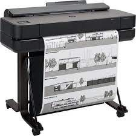
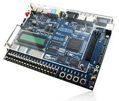

Microcomputadores
O microcomputador é um conjunto de artifícios eletrônicos capazes de realizar processamento de dados, ou seja, é utilizado para processar informações. E é composto por duas partes distintas: Software e Hardware.
Exemplos:Monitor (Vídeo). Teclado/Mouse. Gabinete - Placa mãe, UCP (microprocessador), Memórias (ram e rom),
Componentes internos
são as peças usadas dentro do computador para o funcionamento do mesmo
Componentes internos como processador, placa-mãe, memória RAM, placa de vídeo, coolers e ventoinhas, cabos internos, fonte, HD, SSD, unidades ópticas (drives de CD/DVD/Blu-ray), etc.

CPU
CPU é a sigla em inglês para Unidade Central de Processamento, o componente do computador que concentra todas as principais operações, portanto, se referir à CPU como o “cérebro” desses dispositivos.
Exemplos: permitem a seu PC, celular, tablet ou videogame a funcionar.

Armazenamento
Guardar ou estocar qualquer coisa para posterior uso. Armazenamento também é a tradução de storage, termo em inglês que descreve espaços como self-storages,
Exemplos:embalagens para guardar objetos ou sistemas para armazenar dados de computadores, celulares e outros dispositivos.

Memória
guarda de maneira temporária informações que computadores e celulares precisam durante o uso de programas
quer dizer que o componente ajuda a abrir aplicativos, programas, sites, arquivos e muito mais. Essas informações são apagadas assim que o aparelho é desligado.
Fonte de alimentação
Serve para transformar a energia elétrica que chega pelas tomadas em uma corrente elétrica contínua. Ou seja, ela recebe a energia em 110V ou 220V e transforma na voltagem adequada para o funcionamento do aparelho, que geralmente é 12V.
A própria fonte vai permitir ou não a passagem de mais ou menos energia, conforme a necessidade para gerar a tensão.
Componentes externos
são os periféricos utilizados para que o usuário consiga interagir com a máquina
Exemplos: monitor, teclado, Mouse, caixas de som, impressora.
Teclado
Na computação, o teclado de computador é um dispositivo que possui uma série de botões ou teclas, utilizado para inserir dados no computador. É um tipo de periférico de entrada utilizado pelo usuário para a entrada manual no sistema de dados e comandos.
As teclas do teclado podem ser divididas em vários grupos de acordo com sua função: Teclas de digitação (alfanuméricas). ... Teclas de controle. ... Teclas de função. ... Teclas de navegação. ... Teclado numérico.
Monitor de vídeo
Um monitor é um dispositivo de saída do computador, cuja função é transmitir informação ao utilizador através da imagem.
Quanto mais pixels um monitor tiver, melhor será a qualidade da imagem mostrada.
Mouse
um dispositivo de mão que controla o movimento de um ponteiro na tela (normalmente a imagem de uma seta). Existem diversos tipos de mouse, mas o modelo mais comum tem o formato de um ratinho, por isso o nome em inglês: "mouse". Foi criado para facilitar a interação com o computador.
Em qualquer mouse há um circuito com o controlador do sensor óptico, do LED, dos botões e ainda a interface de comunicação com o computador

Impressora
Periférico de saída de dados (output) que permite obter uma cópia em papel de dados contidos no computador. As impressoras são distinguidas quanto ao tipo de tecnologia usada na impressão.
Existem impressoras de impacto e impressoras sem impacto, estas deixam marcas sem tocar no papel.

Plotter
impressora plotter é a máquina usada pra fazer impressões grandes e com bastante qualidade, como mapas, imagens pra quadros e plantas de arquitetura
ela consegue imprimir em diferentes tipos de superfície, como adesivo plástico e tecido
Scanner
um instrumento de captura, utilizado para digitalizar documentos, transformando documentos de papel em uma imagem digital.
facilitar a digitalização de documentos, o equipamento não tem um custo muito elevado.
Gabinete
proteger os componentes de sujeira e umidade, e também evitar superaquecimento dos componentes. Dentro de um gabinete, existem vários componentes que fazem com que o computador funcione.
Gabinetes horizontais e verticais. Gabinetes pequenos, médios e grandes, gabinetes espaçosos ou extremamente compactos. Não existe muita diferença entre montar um PC com gabinete horizontal ou com um gabinete vertical (torre).
web cam
câmara de vídeo que está, em regra, ligada diretamente a um computador. É um dispositivo de hardware de entrada de sinal (input), cuja função é a captação de imagem e vídeo.
podem ser usados para realizar videoconferência ou transmitir ininterruptamente determinados eventos.
Caixas de som
É o sistema mais simples de reprodução sonora, pode ser mono, quando todos os sons são equalizados em 1 mesmo canal, ou estéreo quando divide-se em duas saídas, pela direita e esquerda.
Sua estrutura conta com uma bobina que é alimentada pelo sinal elétrico, a qual faz com que ela se aproxime e se afaste de um ímã. Dessa forma, o ar é movimentado, que por sua vez fará o cone que compõe o alto-falante vibrar, esta gerará, por fim, o som que escutamos.
Microfone
são equipamentos que transformam energia sonora em energia elétrica, e isso ocorre por meio de processos de indução eletromagnética. Os microfones possuem a finalidade de transformar ondas sonoras em sinais elétricos, que serão dirigidos para amplificadores
transdutor que converte o som em sinais elétricos. Microfones são usados em muitas aplicações como telefones, gravadores.
Head set
Headset é um conjunto de fone de ouvido com controle de volume e microfone acoplado para uso em microcomputadores multimídia e também para telemarketing, ficando preso à cabeça do usuário.
são muito utilizados por quem precisa se comunicar e atender pessoas enquanto realiza outras atividades.
Interfaces de entrada e saída
responsáveis pela conexão entre as várias partes de um sistema computacional baseado na arquitetura de Von-Neumann.
Dispositivos de entrada tipicos são o teclado, o rato, o scanner, etc. Os dispositivos de saída permitem ao computador apresentar os resultados do processamento efectuado. Os dispositivos de saída mais utilizados são o ecran e a impressora.
Interfaces sem fios
permite a transmissão de dados e informações sem a necessidade do uso de cabos – sejam eles telefónico
exemplo, de equipamentos de radiofrequência (comunicações via ondas de rádio), de comunicações via infravermelho (como em dispositivos compatíveis com IrDA) etc.
Áudio
está relacionado com a técnica de gravação, transmissão e reprodução dos sons, mas também pode ter outros significados. O sinal sonoro, que pode ser dividido em sinal analógico ou digital, também se refere ao áudio
uma onda mecânica acústica; é uma onda longitudinal que se propaga de forma circuncêntrica apenas em meios materiais
Rede ethernet
Ethernet é uma família de tecnologias de rede de computadores com fio comumente usadas em redes de área local, redes de área metropolitana e redes de longa distância.
oteadores e switches, que permitem o compartilhamento de dados e recursos, como impressoras, scanners ou dispositivos de todos os tipos.
VGA
A sigla na verdade é utilizada para fazer referência ao conector de vídeo das placas gráficas. A definição exata de VGA é “Video Graphics Array”, que numa tradução livre seria algo como “padrão de disposição gráfica para vídeo”.
responsável por conectar e transmitir imagens de um computador para um monitor ou televisão.
HDMI
O HDMI é um padrão de conexão de dispositivos desenvolvido especificamente para transmissão — combinada ou não — de conteúdo em áudio e vídeo.
. É uma tecnologia que deve ser disponibilizada nos aparelhos eletrônicos diversos, como monitores, notebooks, computadores, TVs, projetores e muito mais.
Usb
um tipo de tecnologia que permite a conexão de periféricos sem a necessidade de desligar o computador, além de transmitir e armazenar dados.
O USB funciona sob um protocolo de transferência. Sua transferência de dados se dá através de pacotes e começa quando o Controlador Host envia um pacote inicial(Token Packet) indicando a direção, o tipo de transmissão, o endereço do dispositivo USB e o referido número de endpoint.
Grandezas elétricas
Potência elétrica
A potência elétrica pode ser definida como a conversão de energia elétrica em outra energia útil ao ser humano.
No caso do chuveiro, quanto maior a potência elétrica, maior a quantidade de calor que ele gera para aquecer a água.

Tensão elétrica
Tensão elétrica é a força elétrica que provoca a circulação de corrente, que faz as cargas elétricas entrarem em movimento.
é a diferença entre o potencial elétrico de dois pontos. É a força necessária para movimentar os elétrons, criando uma corrente elétrica.
Corrente elétrica
A corrente elétrica é o conceito que define o movimento de cargas elétricas, também chamadas iões ou eletrões, dentro de um sistema condutor que apresenta uma diferença de potencial elétrico (ddp) ou tensão elétrica.
Os elétrons livres são estimulados a mover-se pelo condutor, o que gera a corrente elétrica por causa de uma diferença de potencial elétrico (ddp ou tensão elétrica) estabelecida entre as pontas do condutor.
3 unidades de medida utilizadas na informática
Capacidade de armaznamento
A capacidade de armazenamento de um dispositivo é a sua característica que especifica a quantidade máxima de informação que pode conter.
Unidades decimais como kilobyte (KB), megabyte (MB) e gigabyte (GB) são comumente usadas para expressar o tamanho dos dados. Unidades binárias de medida incluem kibibyte (KiB), mebibyte (MiB) e gibibyte (GiB).

Bit
O bit é a menor unidade de informação que pode ser armazenada ou transmitida, usada na Computação e na Teoria da Informação.
Um bit pode assumir somente 2 valores: 0 ou 1, corte ou passagem de energia, respectivamente.
Byte
Um byte, é um dos tipos de dados integrais em computação. É usado com frequência para especificar o tamanho ou quantidade da memória ou da capacidade de armazenamento de um certo dispositivo, independentemente do tipo de dados.
O byte é composto por 8 (oito) bits, e é o necessário para representar qualquer caractere (letras, números, sinais de pontuação).
Múltiplos
Os múltiplos são os resultados das multiplicações entre dois números inteiros. Assim, a partir de um número inteiro, ao multiplicá-lo por outros, obtém-se o conjunto de seus múltiplos. 36 é múltiplo tanto do 12 quanto do 3, pois é o resultado da multiplicação entre eles.
um múltiplo é o produto de qualquer quantidade e um inteiro. Em outras palavras, para as quantidades a e b, dizemos que b é um múltiplo de a caso b = na para alguns n inteiro, isto será chamado de multiplicador ou coeficiente.

frequência
A frequência é uma grandeza física que indica o número de ocorrências de um evento em um determinado intervalo de tempo. Alternativamente, podemos medir o tempo decorrido para uma oscilação. Esse tempo em particular recebe o nome de período. Desse modo, a frequência é o inverso do período.
Definimos a frequência como sendo o inverso do período, ou seja, no Sistema Internacional de Unidades (SI), a frequência nada mais é do que o número de voltas dadas a cada segundo. Por exemplo, se um disco efetua 10 voltas por segundo, dizemos que cada volta é 1/10 de segundo.

Hert
O hertz é a unidade de medida de frequência derivada do Sistema Internacional, a qual expressa, em termos de ciclos por segundo, que descreve qualquer evento periódico, oscilações ou rotações por segundo.
Um dos seus principais usos é descrever ondas senoidais, como as de rádio ou sonoras.
Largura da banda
A largura de banda é um conceito central em diversos campos de conhecimento, incluindo teoria da informação, rádio, processamento de sinais, eletrônica e espectroscopia.
Em rádio comunicação ela corresponde à faixa de frequência ocupada pelo sinal modulado.
Capacidade no canal
A capacidade do canal é uma métrica muito usada para a quantidade máxima de tráfego ou sinal que pode se mover sobre um canal de infraestrutura específico
o mais indicado é que – numa frequência de 2,4 GHz, o bandwidth esteja configurado em 20 MHz

Bit/seg(bps)
Bit por segundo (b/s ou bit/s) é uma unidade de informação (em bits) para medir a taxa de transferência de dados (no tempo, em segundos).
serve de base para o armazenamento e processamento de informações em um computador.

Taxa de transferência
Em telecomunicações e em computação, taxa de transferência de dados é o número médio de bits, caracteres ou blocos convertidos ou processados por unidade de tempo que passam entre equipamentos num sistema de transmissão de dados.
mede o número de unidades que uma rede processa dentro de um período específico, geralmente uma hora.
tráfego do canal
é como chamamos todo o alcance, visitas e visualizações que você recebe em suas páginas, sites, redes sociais, blogs e outros.
É uma métrica baseada nos acessos que o seu conteúdo recebe.

Byte/seg (Bps)
Unidade de medida do débito da transmissão de dados utilizada para indicar o número de bytes transmitidos por segundo.